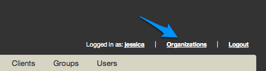

Selecting an Organization to UseA user is allowed to be associated with multiple organizations. When there are multiple orgs, you can select which organization to use from the list of associated organizations in the Hosted Chef Management Console. Subsequent actions will be scoped to that organization. To see which organization is currently selected, or to view the list of associated organizations: 1. Log into the Hosted Chef Management Console 2. Click organizations in the upper right of the screen, next to your username.  3. On the Organizations page, click the Select link next to the organization you want to select to use. If there are no associated organizations listed, please make sure your user account is associated with an organization or contact Opscode Support.
Creating an OrganizationIn order to create a new organization: 1. Log in to the Hosted Chef Management Console using your existing username. 2. Go to the Organizations page. If you do not have an organization associated with your user, you are on that page automatically. Otherwise, click the Organizations link on the upper right corner.
3. On the Organizations page, click Create.
4. Enter a full name and a short name. The short name is like an account name for your new organization, only lower case a-z, -, and _ are supported. You cannot use spaces in the short name. 5. Select your desired billing plan to create your organization.
6. If you selected any of the non-free billing plans in the previous step, you will be prompted to enter your billing information at this time. Please do so before you proceed.
7. Download your validation key and a sample Knife configuration file. You need to use the validation key to register new clients using this organization. The Knife configuration file allows you to start using Chef's command-line tool, Knife, immediately.
If you will be using Knife, be sure to download the User's Private Key as well. Adding or Removing a User from an OrgIf you want other users to be able to access the organization with Knife or the REST API, you will need to add them to the organization with the correct permissions so they are authorized to make changes to it. Associate a user to the organizationIn order to associate a user with the current organization: 1. Ask them to sign up for a Hosted Chef account and give you their username. 2. Log on to the Hosted Chef Management Console and select an organization to use if you are associated with multiple organizations. 3. Click the Users tab in the main navigation menu. 4. Click Invite in the sub-menu 5. Enter the users you want to associate to the organization shown, separated by comma if there is more than one. And then click on the Invite button:
Afterwards you should see this user appear in the Pending User Invites section of the Users tab. 6. Ask the user to log into their account to accept the invite. 7. The user will need to click on organizations in the upper right hand corner. Then they can click on the Accept link next to the invite at the bottom of the page:
Note: You need update permissions on the organization to be able to associate a user with the organization. Users in the admins group have update permissions by default. Remove a user from the organizationIn order to dissociate a user from the current organization: 1. Log on to the Hosted Chef Management Console and select an organization to use if you are associated with multiple organizations. 2. Click the Users tab in the main navigation menu. 3. Click Dissociate next to the username. Click OK on the warning message box. Note: You need update permissions on the organization to be able to dissociate a user from the organization. Users in the admins group have update permissions by default. Regenerating the Private Key and the Knife ConfigThe private key for the organization is also referred to as the validation key and is used to authenticate with both Knife and chef-client. Regenerating the key will be useful if you have lost the organization's private key, if the private key has been exposed to someone you don't want to have access to your Hosted Chef account, or if you wish to regularly rotate keys for security purposes. You can also download a default Knife config on the same page. In order to download the private key and the knife.rb file: 1. Log into the Hosted Chef Management Console 2. Click organizations in the upper right of the screen, next to your username. 3. On the Organizations page, click the Regenerate validation key and the Generate knife config links to regenerate the private key and download a Knife config file. If there are no associated organizations listed, please make sure your user account is associated with an organization or contact Opscode Support.
If you will be using Knife, be sure to download the User's Private Key as well.
|


|
|


{kind=link}